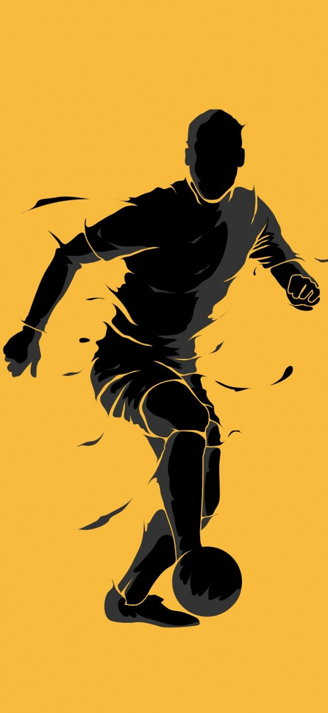

Tu web para estar al tanto y comprobar en tiempo real los resultados y clasificación de todos los equipo de futbol de las diferentes categorias de nuestra liga local.
- Segimiento en tiempo real de los partidos que se disputen
- Estadísticas actualizadas para conocer la clasificación en todo momento
- Gestor de equipos para entrenadores
- Posibilidad de filtrar por diferentes categorias
- Posibilidad de filtrar por diferentes jornadas